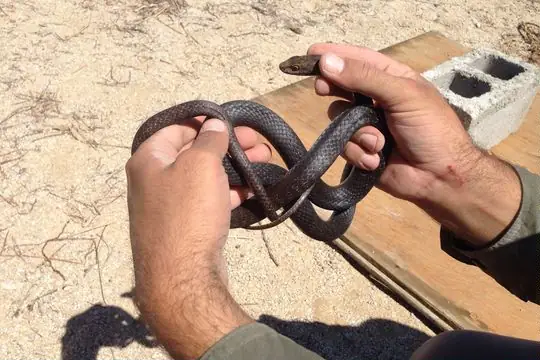
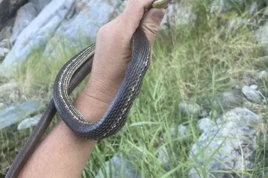
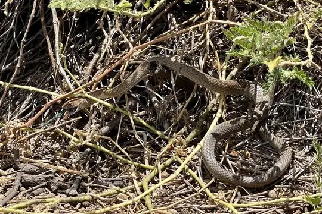
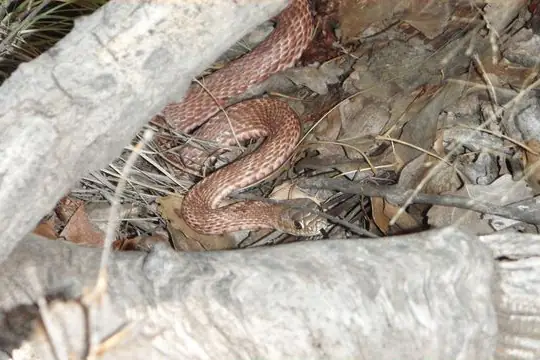
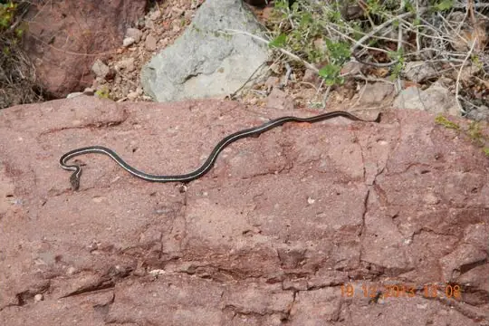
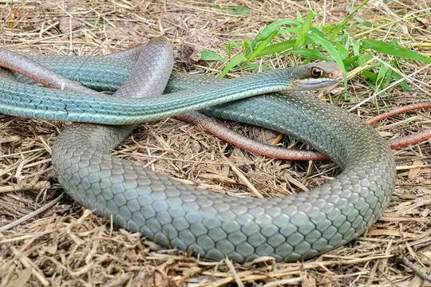
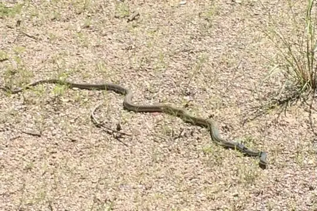
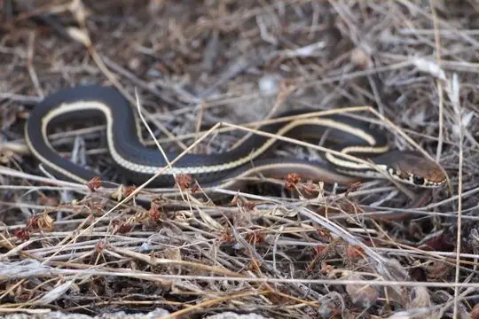
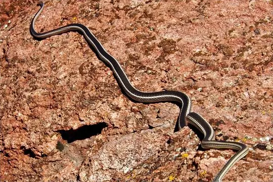

Masticophis
The genus Masticophis (family Colubridae) has 11 species in SnakeList (none venomous), recorded in 11 countries.
- 11species
- 11non-venomous
- 11countries
About the genus
A genus of the family Colubridae (colubrids).
Species
Showing 11 species

Baja California CoachwhipMasticophis fuliginosus
Cape Striped WhipsnakeMasticophis aurigulus
Clarión Whip SnakeMasticophis anthonyi
CoachwhipMasticophis flagellum
Espiritu Santo Striped WhipsnakeMasticophis barbouri- No photo yetIsla San Esteban WhipsnakeMasticophis slevini
 Neotropical Whip SnakeMasticophis mentovarius
Neotropical Whip SnakeMasticophis mentovarius
Schott's WhipsnakeMasticophis schotti
Sonoran WhipsnakeMasticophis bilineatus
Striped RacerMasticophis lateralis
Striped WhipsnakeMasticophis taeniatus
No snakes in Masticophis match.
About the genus Masticophis
- Family: Colubridae.
- Recorded in: Belize, Colombia, Costa Rica, El Salvador, Guatemala, Honduras, Mexico, Nicaragua, Panama, United States, Venezuela.